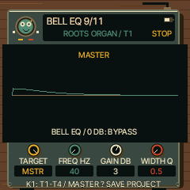
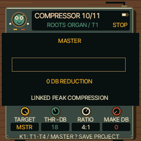
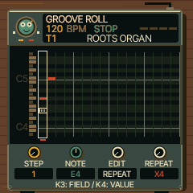
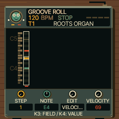

UI 0.7.8 preview. Shared FM-1 firmware; hardware installation and physical testing remain pending. This preview has separate browser saves and starts fresh.

From HOME, tap FX through to BELL EQ. One bell band is available for each track and the master.
| Knob | Control |
|---|---|
| K1 TARGET | T1–T4 or MSTR (master) |
| K2 FREQ | Centre frequency, 40 Hz–16 kHz |
| K3 GAIN | −12 to +12 dB. Zero bypasses EQ. |
| K4 WIDTH Q | 0.5 broad → 4 narrow |
The curve illustrates the parameter settings; it is not a measured spectrum.

Continue tapping FX to COMPRESSOR and COMP TIMING. K1 chooses the same T1–T4/master target on both pages.
| Page | K2 | K3 | K4 |
|---|---|---|---|
| COMPRESSOR | Threshold below full scale: 24 means −24 dBFS | Ratio: OFF, 2:1, 3:1, 4:1, 8:1, 20:1 | Makeup gain 0–12 dB |
| COMP TIMING | Attack 1–100 ms; 0 = default 10 ms | Release 1–1000 ms; 0 = default 150 ms | Same ratio/bypass |
Start at threshold 18–24, ratio 2:1 or 4:1, makeup 0. The meter shows actual gain reduction. Ratio OFF bypasses compression and makeup. Stereo channels share gain reduction so their balance stays intact.

Tap SEQ for the main roll/grid. The separate velocity page has been folded into this editor.
| Knob | Control |
|---|---|
| K1 STEP | Choose a step |
| K2 NOTE / DRUM | Choose one chord note or drum lane |
| K3 EDIT | Select VELOCITY, LENGTH, REPEAT, PITCH (HIT on drums) |
| K4 VALUE | Change only that note/hit's chosen field |
Four hats, one kick: select the hat lane with K2, choose REPEAT with K3 and x4 with K4. Leave the kick at STEP/x1. Select LENGTH to change just the hat's gate. Repeats fit within one step; lengths are in steps (quarter-step increments through 4, then longer choices through 64). STEP inherits original step timing or repeats.

Note colours follow velocity: green 1–42, yellow 43–84, red 85–127. A cream outline marks the selected note; muted drum lanes remain dim.
Velocity is 1–127; turning below 1 restores step velocity/accent. Hold EDIT and play keys to add notes. Hold REC and play keys to replace a step. Drum white keys toggle hits; HIT with K4 also switches a selected hit on/off.
Mixer REVERB and FX SENDS → REV edit the same per-track send: how much of that track enters the shared reverb. FX → REVERB changes its shared sound (model, size and damping), affecting every track sent to it.
Tap SAVE → PROJECT. K1 chooses A–D, K4 selects SAVE, then OCT+ confirms. Old projects load with processors bypassed. Newly saved processing/timing projects require 0.7.8; older firmware cannot load their new format.
The existing 128-entry pool is shared by note velocity, timing and automation. Full-pool edits are refused. Dense projects can also exceed the compressed save capacity: SAVE FULL / INVALID DATA means the old slot is preserved and the new work has not saved. Keep an earlier slot/backup when testing.
Your hardware has not been updated. The existing stable emulator and older preview saves remain separate.